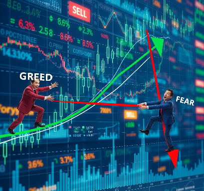
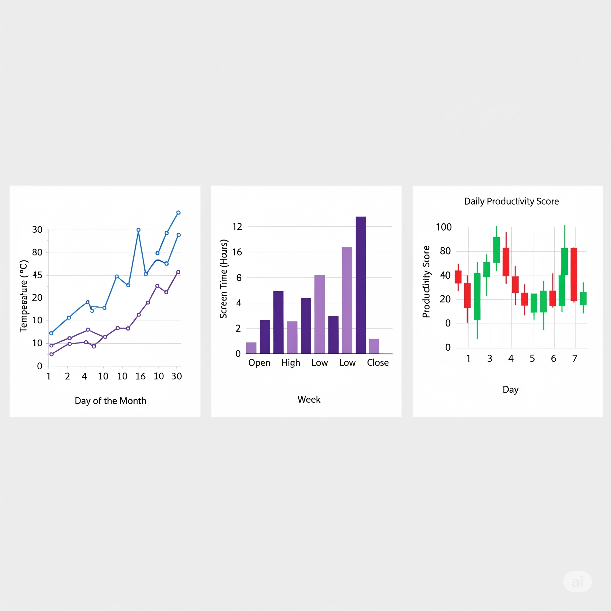

Technical Analysis Mastery
Decode market movements and trade with confidence.
1. Introduction to Technical Analysis
What is technical analysis & why it matters
Technical analysis is a trading discipline used to evaluate investments and identify trading opportunities

Technical analysis is the study of 📈 price charts, 🔍 patterns, and 📊 market data (like volume) to predict future price movements. Instead of focusing on a company's financial health or industry trends (that's fundamental analysis 🏦), technical analysis focuses on "what the market is doing" right now.
- 📉 Charts (line, bar, candlestick)
- ⚙️ Indicators (Moving Averages, RSI, MACD)
- 🌀 Patterns (Head & Shoulders, Double Top/Bottom, Trendlines)
💡 Why It Matters
- 🚀 Helps Identify Trends – Spot whether the market is going up, down, or sideways.
- 🎯 Better Entry & Exit Points – Know when to buy and when to sell.
- 🌍 Works for Any Market – Stocks, forex, crypto, commodities.
- 🧠 Data-Driven Decisions – Reduce emotional trading by relying on signals.
🍋 Real-Life Example
Imagine you run a fruit shop 🛒. You notice:
- ☀️ Every summer, the price of mangoes rises.
- 🌧️ In rainy season, prices drop.
- 🎉 Around festival season, prices peak sharply.
By tracking these seasonal patterns over the years 📅, you can predict when prices will go up or down — even if you don’t know exactly why.
That’s what technical analysis does in trading: it looks at past price behavior to make better predictions for the future 📆.
Difference between technical and fundamental analysis
While both technical and fundamental analysis are used to evaluate financial instruments and make trading decisions, they take different approaches. Think of it like a doctor assessing a patient: fundamental analysis is like looking at a patient's medical history,

lab results, and overall health to determine their long-term prognosis. Technical analysis is like monitoring their heart rate, blood pressure, and other real-time vital signs to make immediate decisions about their condition.
Fundamental Analysis 📊
Fundamental analysis is the process of evaluating a company's intrinsic value by examining its financial statements 📝, management 👨💼, industry 🏭, and the overall economic environment 🌍. The goal is to determine if a stock is currently overvalued or undervalued.
- 🤔 Focus: The "why" behind a company's price.
- 📈 Data Used: Financial reports 📄 (balance sheets, income statements), earnings per share (EPS), price-to-earnings (P/E) ratio, industry trends 📊, and economic indicators like GDP and interest rates.
- 🕰️ Time Horizon: Typically long-term. Investors who use fundamental analysis are often looking for stocks to hold for months or even years, betting that the market will eventually recognize the company's true value.
- 💰 Example: An investor reads a company's annual report and sees that its revenue and profit margins have been consistently growing. They also note that the company has a strong brand 💪 and is a market leader. This leads them to believe the stock is currently undervalued and has great long-term potential. They buy and hold the stock, expecting the price to rise over time.
Technical Analysis 📉📈
Technical analysis, on the other hand, is the practice of evaluating securities by analyzing statistical trends from past trading activity, such as price movement and volume. It operates on the principle that all relevant information is already reflected in the price.
- 👀 Focus: The "what" behind a company's price.
- 📐 Data Used: Price charts 📊, trading volume 🔊, and indicators like moving averages, the Relative Strength Index (RSI), and MACD (Moving Average Convergence Divergence).
- ⏱️ Time Horizon: Typically short-term. Traders use technical analysis to identify patterns and trends to time their entry and exit points for quick profits. 💸
- 📉 Example: A trader observes a stock's chart and notices a "head and shoulders" pattern, a common chart formation that signals a potential reversal of an uptrend. Based on this pattern, they decide to sell their shares to avoid a potential price drop, even if the company's underlying fundamentals are strong.
Key Differences Summarized
Feature Fundamental Analysis Technical Analysis Primary Goal 💎 Determine a company's intrinsic value. 🔮 Forecast future price movements. Focus 🏢 The business behind the stock. 🛒 The market action of the stock. Time Frame 🗓️ Long-term (months to years). ⏳ Short-term (minutes to months). Key Tools 🧠 Financial statements, economic data, industry analysis. 📐 Price charts, volume, and technical indicators. Core Belief ⚖️ A stock's price will eventually reflect its true value. 🏷️ All relevant information is already in the price. Understanding market psychology and price action
In the world of trading, numbers and charts tell only part of the story. The rest is told by human emotions. Market psychology and price action are two intertwined concepts that help traders understand the "why" and "what" behind market movements.
Market Psychology: The "Why" Behind the Moves 🤔
Market psychology refers to the overall sentiment and collective behavior of market participants. It's driven by powerful human emotions like greed 🤑, fear 😱, excitement 🤩, and anxiety 😬. These emotions, often in a herd mentality, can cause markets to move in ways that might seem irrational based on a company's fundamentals.
- Greed and Euphoria: When a market is rising, greed kicks in. Traders see others making money and are afraid of missing out (FOMO - Fear of Missing Out) 🏃💨. This drives them to buy, pushing prices even higher and creating a bullish market. This can lead to a bubble where prices become detached from the underlying value. 🎈
- Fear and Panic: When the market turns and prices start to fall, fear takes over. Traders, fearing losses, start to sell 📉. This panic selling can accelerate the decline, creating a downward spiral and a bearish market, where assets are often sold for far less than their true value. 🥶
Price Action: The "What" on the Chart 📊
Price action is the raw movement of a security's price over time. It's the most basic form of technical analysis, where traders make decisions based on the patterns, trends, and levels they see on a chart, without relying on other indicators. Price action is the visual manifestation of market psychology. 👀
- Candlestick Patterns: Specific shapes on a chart (like a "pin bar" or "engulfing pattern") that tell a story about the battle between buyers and sellers. ⚔️
- Support and Resistance Levels: "Floors" ⬇️ and "ceilings" ⬆️ where a price has historically struggled to fall below or rise above.
- Trend Lines: Lines drawn to connect a series of highs or lows, indicating the direction of the market. 📈📉
The Interplay: A Real-Life Example 🎬
Let's imagine a fictional tech company, "Innovate Solutions."
- Greed and the Uptrend: Innovate Solutions announces a groundbreaking new product. The initial news is positive, and early investors start buying. Other traders, driven by excitement and FOMO, jump in. This collective greed creates a strong uptrend on the price chart. The price action shows a series of higher highs and higher lows, with long green candlesticks, indicating strong buying pressure. The market psychology is one of euphoria. 🚀
- The Overstretched Peak: The stock's price surges, but the company's fundamentals haven't caught up. Smart money and seasoned traders begin to notice the price is becoming unsustainable. The price action shows a "head and shoulders" pattern forming, with the price making a high, a higher high, and then a lower high. This is a subtle signal that the buying momentum is weakening. 🧘♂️
- Fear and the Reversal: Suddenly, a news report reveals that the new product has a major bug. The collective mood of the market shifts from euphoria to fear. Traders who bought in late now panic and start selling to cut their losses. This mass selling, fueled by fear, causes the stock to plummet. The price action confirms the reversal, breaking below a key support level that had been holding for weeks. The long red candlesticks and high volume on the sell-off are the visual representation of the panic in the market. 💥
In this example, market psychology (greed, FOMO, fear, panic) was the engine driving the price. Price action (the uptrend, the head and shoulders pattern, the breakdown of support) was the vehicle that allowed traders to visualize and interpret those emotions, helping them to make decisions about when to buy and when to sell. 🎯
2. Chart Types & Timeframes
Line, bar, and candlestick charts
Line charts are the simplest way to visualize a security's price history. They connect a series of data points over a given time frame
Line Charts 📈
A line chart is great for showing trends over time.
- Daily Life Example: Imagine you're tracking the temperature in your city every day for a month 🗓️. A line chart would connect the daily high temperature data points. This makes it easy to visualize if the weather is getting warmer or cooler overall, without getting bogged down by hourly fluctuations.
Bar Charts 📊
A bar chart gives you more detail than a line chart, showing the "open," "high," "low," and "close" data for each period.
- Daily Life Example: Let's say you're monitoring your weekly screen time on your phone 📱. A bar chart could represent each day. The top of the bar would be the maximum hours you spent on your phone in a single session (the high), and the bottom would be the minimum (the low). Small ticks on the left and right could represent your screen time when you first woke up (the open) and your last use before bed (the close).
Candlestick Charts 🕯️
Candlestick charts are a visually intuitive way to show the same data as bar charts, but with color to represent a positive or negative change.
- Daily Life Example: You could use a candlestick chart to track your daily productivity at work 🧑💼. A green 🟢 candle would represent a day where you completed more tasks than the previous day (a "bullish" day). A red 🔴 candle would mean you completed fewer tasks (a "bearish" day). The body of the candle would show the difference, and the wicks would represent your peak and lowest productivity levels during the day.
Intraday, swing, and positional trading timeframes
Intraday trading involves buying and selling financial instruments within the same trading day.
Intraday Trading 🏃💨
Intraday trading involves buying and selling financial instruments within the same trading day ⏱️. The goal is to profit from small price fluctuations 🤏, and no positions are held overnight 🌃. This style is characterized by its very short timeframes, typically lasting from a few minutes ☕ to a few hours ⏳. Intraday traders often use one-minute, five-minute, or fifteen-minute charts to analyze price action 📈📉.
- Daily Life Example: A fruit vendor buys a box of apples at 9:00 a.m. for ₹500. They sell individual apples throughout the day, and by 5:00 p.m., they've sold the entire box for a total of ₹650. The vendor has made an intraday profit of ₹150, all within the same day, without holding any inventory overnight.
Swing Trading 🏄♂️
Swing trading is a style that aims to capture short- to medium-term gains in a trend. Unlike intraday trading, swing traders hold their positions for more than one day, typically for a few days 🗓️ to a few weeks 📅. They focus on identifying potential "swings" or reversals 🔄 in price action, using tools like daily and weekly charts to make their decisions 🤔.
- Daily Life Example: A person buys an antique chair at a yard sale for ₹2,000. They believe its value will increase slightly in the short term. They hold the chair for two weeks, do some minor repairs, and then sell it at a local flea market for ₹3,000. They've capitalized on a short-term trend in the vintage furniture market, holding the item for a few days to weeks.
Positional Trading 🧘♀️
Positional trading is a long-term strategy where traders hold a position for an extended period, which can be weeks 🗓️, months ⏳, or even years 🗓️🗓️. This style ignores minor market fluctuations 🌊 and focuses on the bigger picture 🔭, using long-term trends and fundamental analysis 🧐 to make decisions. Positional traders use weekly, monthly, and even yearly charts 🗺️.
- Daily Life Example: An individual buys a house for ₹50 lakh. They believe the property's value will increase significantly over the next decade due to local development projects. They rent out the house and hold onto it for 10 years, ignoring short-term fluctuations in the housing market. After 10 years, they sell the house for ₹1 crore, profiting from the long-term trend of rising property values in the area.
Summary of Differences
Feature Intraday Trading Swing Trading Positional Trading Timeframe Minutes to hours ⏱️ Days to weeks 🗓️ Weeks, months, years 🗓️🗓️ Goal Profit from small price moves 🤏 Capture short- to medium-term swings 🏄♂️ Profit from long-term trends 🧘♀️ Chart Analysis 1, 5, 15-minute charts 📈 Daily, weekly charts 📊 Weekly, monthly, yearly charts 🗺️ Risk High (due to frequency) 🔥 Medium ⚠️ Lower (over a longer period) 🧊 - Choosing the right timeframe for your strategy
3. Trend Analysis
- Identifying uptrends, downtrends, and sideways markets
- Trendlines & channels
- Multi-timeframe trend confirmation
4. Support & Resistance
- Concept & importance
- Horizontal vs dynamic support/resistance
- How to trade breakouts and reversals
5. Candlestick Patterns
- Single patterns: Doji, Hammer, Shooting Star, Marubozu
- Multi-candle patterns: Engulfing, Harami, Morning/Evening Star
- Using patterns with confirmation signals
6. Technical Indicators
- Moving Averages (SMA, EMA, WMA)
- RSI & MACD
- Bollinger Bands & VWAP
- Combining indicators for better accuracy
7. Chart Patterns
- Continuation: Flags, Pennants, Triangles
- Reversal: Head & Shoulders, Double Top/Bottom, Rounding Bottom
- Setting entry & exit targets
8. Volume Analysis
- Why volume matters
- On-Balance Volume (OBV)
- Volume confirmation for breakouts
9. Risk Management
- Stop-loss & take-profit levels
- Risk-to-reward ratio
- Position sizing strategies
10. Trading Psychology
- Avoiding emotional trading
- Building discipline
- Journaling trades for improvement
11. Live Chart Practice
- Reading real market charts
- Practicing with TradingView
- Step-by-step trade setups